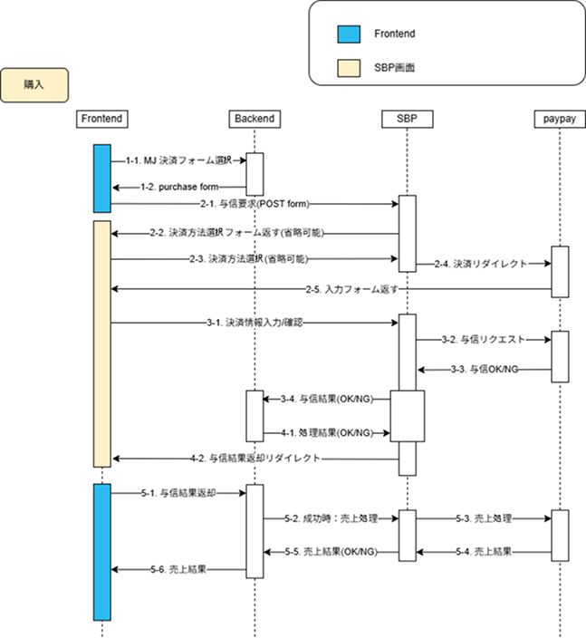
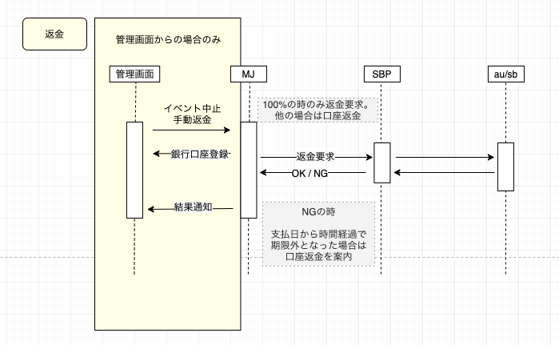
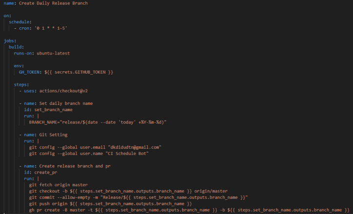
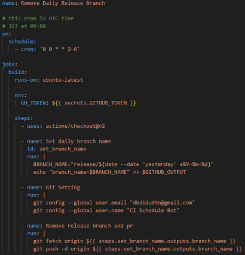

Projects
プロジェクト
・・・
・・・
決済・課金
新しい決済方法の導入（PayPay）
- 課題
- 決済代行（SBペイメントサービス）経由で、PayPay決済を新たに導入する
- 対応
- フロントエンド・バックエンド・決済代行間のリダイレクト処理と、与信・売上確定の状態管理を実装。決済に関わるため、社内のビジネス担当と要件・例外ケースをすり合わせながら開発
- 結果
- リリース後の想定外の不具合も原因分析・修正を行い、継続的に改善（与信待ち中の表示不具合の修正など）

決済フローのシーケンス図

返金フローのシーケンス図
決済までのE2Eテスト自動化
- 課題
- 決済まわりの不具合を、リリース前に確実に検知したい
- 対応
- Playwrightを導入し、テスト環境で決済までの一連の流れを自動テスト化
- 結果
- 一般的な決済エラーの発生が0件に
・・・
AI活用・新規開発
AIキャラクターチャットサービスの新規開発
- 課題
- 新規事業として、AIキャラクターチャットサービスを1人で立ち上げる
- 対応
- コンセプト策定・要件定義・画面/DB設計から、React / Next.js / NestJSでの開発、Stripe決済・Google OAuth認証まで担当。クローズドβ／オープンβのフィードバックでUI・機能を改善し、クリエイター3名の募集、仕様書・損益計算書の作成、法務調査も実施
- インフラ
- AWS上で、CloudFront（WAF）・ALBの配下にNext.js / NestJSを載せたEC2をMulti-AZのAuto Scalingで構成し、データはRDS（PostgreSQL）とElastiCache（Redis）に分離。重い処理はSQS（DLQ付き）経由でbatch-workerに非同期で処理させ、画像はS3から配信。LLM API（OpenAI・Anthropic・Google Gemini）はストリーミングで応答を返す。CI/CDはGitHub Actionsでビルドし、ECRへのイメージpush、CloudFrontのキャッシュ無効化、Playwrightでのチェックまでを自動化
- 結果
- 開発は完了したものの、運営・マーケティング体制が整わず事業判断で停止。費用が発生しないようAWSの関連リソースを整理
AIを活用した開発フローの整備
- 課題
- 限られた人数で、開発スピードと品質を両立したい
- 対応
- SlackからDevinを使えるように導入し、エラー調査にも活用。AGENTS.md・CLAUDE.mdを改善し、プロジェクト用のskill・ローカルプラグインを導入
- 結果
- 月間リリースPR数が6件→10件に
・・・
開発者体験
コード品質向上のための導入
- 課題
- フロントエンドで型の確認ができず、コードの書き方も統一されていなかった
- 対応
- TypeScriptを導入して型を確認できるように。ESLintの分析でコード品質を上げ、Prettierでコードの統一性を高めた
コード品質チェックの自動化（CI）
- 課題
- lint・Prettierのチェックを手動で行うと漏れが出る
- 対応
- GitHub / GitLabそれぞれにymlを用意し、push毎にlint・Prettierを実行。最初は npm run のコマンドを直接書いていたが、reviewdog を利用する形に改善
テスト環境の自動デプロイ（CD）
- 課題
- テスト環境（AWS EC2）へのデプロイを各自のローカルからコマンドラインで行っており、開発者ごとの環境の違いによってデプロイ時のエラーが起きていた
- 対応
- GitHub Actionsで、指定したブランチをEC2にデプロイするワークフローを作成。手動実行（workflow_dispatch）にすることで、GitHubの画面からブランチを選んでデプロイできるようにした
- 結果
- デプロイ方法をコマンドラインからUIに、実行環境をローカルからGitHub Actionsに統一し、環境差によるデプロイエラーを削減
本番リリースの効率化
- 課題
- 1件ずつ本番にリリースすると、ブランチのコンフリクトや本番サーバーへの負担が増える。毎日のブランチ作成・削除は手作業だと漏れが出る
- 対応
- リリース用ブランチの作成・削除を自動化し、まとめてリリースする運用に変更

ブランチ作成のコード例

ブランチ削除のコード例